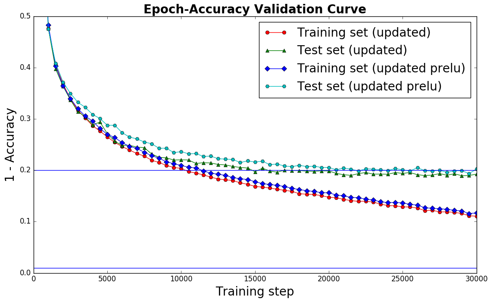
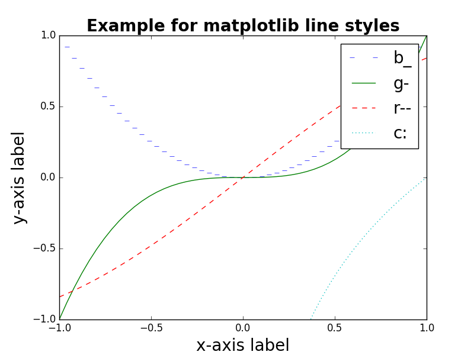

Matplotlib is a simple Python library to create plots like this one:
{kind=link}

As I always have to look up different styles of markers / lines, here is a little summary.
Simple plots
Here is some sample code:
#!/usr/bin/env python
# -*- coding: utf-8 -*-
"""Visualize matplotlib marker styles."""
import matplotlib.pyplot as plt
import numpy as np
from matplotlib.lines import Line2D
# Get colors / markers / functions
colors = ("b", "g", "r", "c", "m", "y", "k")
markers = []
for m in Line2D.markers:
try:
if len(m) == 1 and m != " ":
markers.append(m)
except TypeError:
pass
f1 = lambda xs: [x ** 2 for x in xs]
f2 = lambda xs: [x ** 3 for x in xs]
f3 = lambda xs: np.sin(xs)
f4 = lambda xs: np.log(xs)
f5 = lambda xs: [x ** 0.5 for x in xs]
f6 = lambda xs: [x for x in xs]
f7 = lambda xs: [x + 1 for x in xs]
functions = [f1, f2, f3, f4, f5, f6, f7]
# Define the plot
plt.ylim(-1.0, 1.0)
plt.title("Example for matplotlib markers", fontweight="bold", fontsize=20)
plt.xlabel(r"""x-axis label""", fontsize=20)
plt.ylabel(r"""y-axis label""", fontsize=20)
# Define at which x positions to evaluate the functions f_i(x)
xmin = -1
xmax = 1
samples = 50
xs = np.linspace(xmin, xmax, samples)
# Plot the functions
for color, marker, f in zip(colors, markers, functions):
format_str = "{color}{marker}-".format(color=color, marker=marker)
plt.plot(xs, f(xs), format_str, label=format_str)
plt.axhline(y=0.20)
plt.legend(fontsize=20)
plt.savefig("matplotlib-marker-styles.png") # or plt.show()
Markers
Basically, the matplotlib tries to have identifiers for the markers which look similar to the marker:
- Triangle-shaped:
v,<,>,^ - Cross-like:
*,+,1,2,3,4 - Circle-like:
o,.,h,p,H,8
{kind=link}
{kind=link}
{kind=link}
{kind=link}
Line Types
{kind=link}
